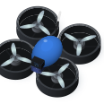
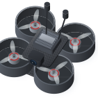
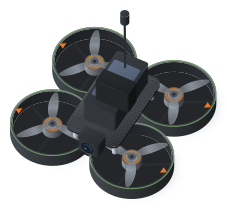
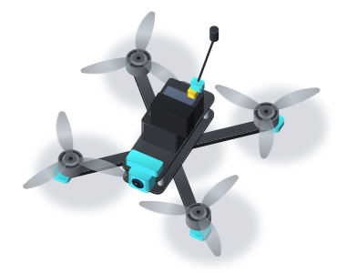
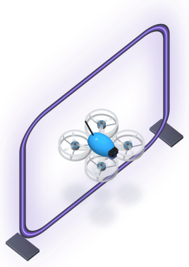
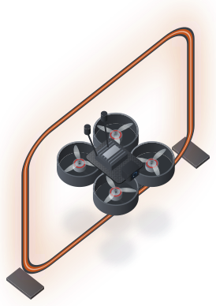
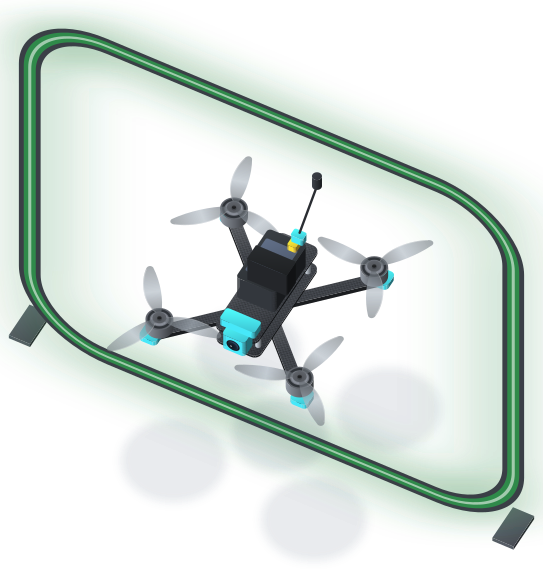

<!doctype html><meta charset="utf-8"><title>drones</title><style>body{background:#fff;font:14px Barlow,sans-serif;margin:30px;display:flex;flex-wrap:wrap;gap:40px;align-items:flex-end}figure{margin:0;text-align:center}img{display:block}figcaption{margin-top:8px;color:#555}</style><figure><figcaption>radio · 132 mm wide</figcaption></figure><figure><figcaption>whoop · 105 mm wide</figcaption></figure><figure><figcaption>pavo · 129 mm wide</figcaption></figure><figure><figcaption>cinebot · 183 mm wide</figcaption></figure><figure><figcaption>five · 278 mm wide</figcaption></figure><figure><figcaption>gate-1</figcaption></figure><figure><figcaption>gate-2</figcaption></figure><figure><figcaption>gate-3</figcaption></figure>